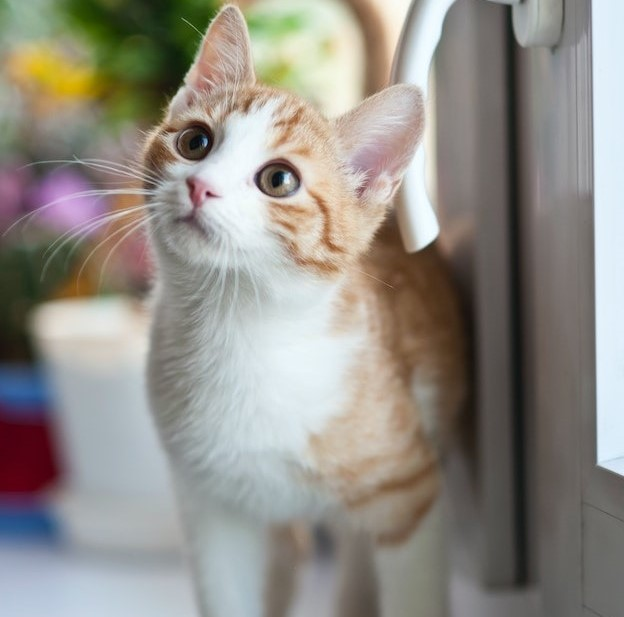
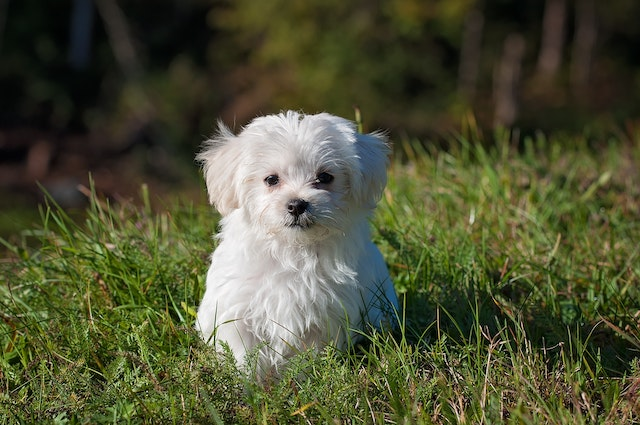

Perrito encontrado
Encontrado en Buenos Aires-Cardales,macho,tamaño pequeño,lleva arnés color marrón
Detalle


Border Collie encontrado
La encontramos en zona Belgrano y Bustamante,es una hembra de tamaño mediano.
Detalle


Cachorro encontrado
Cachorrito encontrado en la zona de Valle grande, sexo hembra,tamaño pequeño.
Detalle